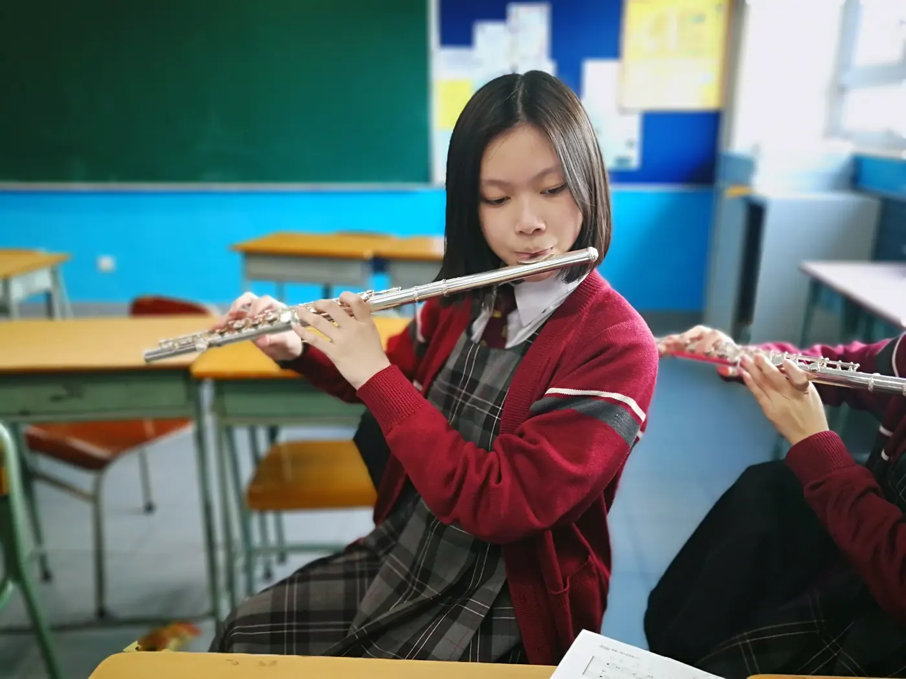

長笛2 分鐘
打開笛盒之後：把練習的首五分鐘留給聲音
笛盒打開，樂譜也放好了，手卻習慣直奔最難的一行。長笛的首五分鐘可以另有安排：先讓身體、樂器和耳朵一起進入狀態。這段時間不必追求音域寬廣，選幾個已經容易發聲的音，聽它們今天是否仍然從容。

長笛學習從姿勢、吹口與氣流開始。聲音逐漸穩定後，加入指法、節奏、讀譜與曲目，讓基本功與音樂一起前進。
適合初次接觸長笛、希望重拾演奏的成人，以及想整理音色、讀譜或考級準備的學生。兒童入門會連同手指跨度、樂器重量及專注狀況考慮。
已有長笛可帶同樂器及正在使用的教材。尚未購買，可先討論適合的尺寸、手感及保養要求，再作選擇。
短時間也可以有明確任務：先以舒服音區暖身，再處理一個換指或樂句，最後回聽一小段。吹奏之間留休息，保持自然姿勢。
長笛2 分鐘
笛盒打開，樂譜也放好了，手卻習慣直奔最難的一行。長笛的首五分鐘可以另有安排：先讓身體、樂器和耳朵一起進入狀態。這段時間不必追求音域寬廣，選幾個已經容易發聲的音，聽它們今天是否仍然從容。
長笛2 分鐘
旋律吹到一半，氣快用完，眼睛才開始找地方停。換氣若總在最後一刻決定，樂句便容易像被剪斷的句子。較穩妥的方法，是先離開樂器，把旋律唱出來，再在譜上用鉛筆留下幾個有意思的逗號。
長笛2 分鐘
兩個人都能吹好自己的聲部，合起來卻總在第一拍分開。二重奏的起點不只有拍子，還有互相看見、一起預備和共享呼吸。先用很容易的旋律建立這份默契，通常比急着選難曲更有收穫。
基本樂理、嘴形、發音、呼吸、運舌和指法等技巧之外，張老師會按程度挑選古典名曲，也會用爵士、流行曲甚至動漫歌曲訓練。每年安排學生報考英國皇家音樂學院考試，並推薦參加不同類型的公開比賽。
想看學生的成績和課堂照片？見相片集。
查詢時可提供年齡、已有經驗、現有樂器與可上課時間，也可以說說最想學的一首曲。